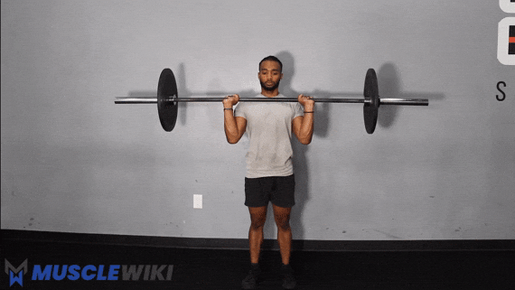
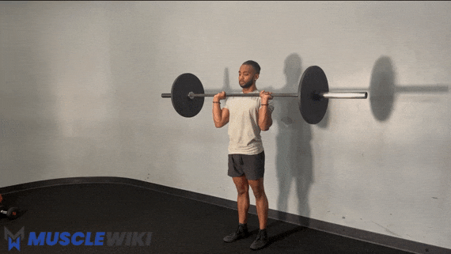

Shoulders
Elevated Pike Press
Difficulty : Beginner
- Use a bench or an object to elevate your feet.
- Lower your head towards the floor by bending your elbows
- Push through your hands and return to the starting pike position.
- Repeat
Elevated Pike Shoulders Shrug
Difficulty : Beginner
- Use a bench or an object like a chair to elevate your feet.
- Slowly lower your body (scapula) while keeping your elbows locked (this is key)
- Slowly raise your body back to the start position.
Dumbbell Seated Overhead Press
Difficulty : Beginner
- Sit on a bench with back support. Raise the dumbbells to shoulder height with your palms forward.
- Raise the dumbbells upwards and pause at the contracted position.
- Lower the weights back to starting position.
Lateral Raise
Difficulty : Beginner
- Stand up straight with dumbbells at either side, palms facing your hips.
- Raise your arms on either side with a slight bend in your elbow until they are parallel with the floor.
- Pause at the top of the motion.
- Slowly return your arms down to starting position.
Barbell Overhead Raise
Difficulty : Intermediate


- Take a roughly shoulder width grip. There should be a straight line from your elbow to fist (vertical forearms).
- Pull your chin back and press the weight toward the ceiling by extending at the elbow joint and flexing at the shoulder joint.
- Press until your elbows are extended and push your head forward slightly.
- Return to the start position with control. Pulling your chin back to allow the bar to pass your face safely.
Barbell Upright Row
Difficulty : Advanced
- Take a double overhand roughly shoulder width grip.
- Pull your elbows straight up the ceiling. Aim to get the bar to chin level or slightly higher.